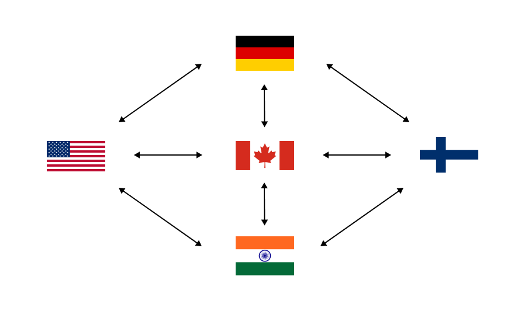
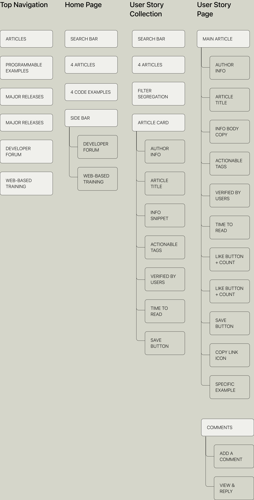

Project Overview
During my time at Nokia with the Network Infrastructure team, I led a key design project to enhance
user experience and developer collaboration by redesigning the community section of the Developer
Portal Website to address engagement challenges. I owned the process from ideation to implementation
and had the opportunity to collaborate with cross-functional teams, including developers, product
line managers, designers, and content writers.
Team:
PRODUCT MANAGER
DEVELOPERS
CONTENT DESIGNER
BRAND DESIGNER
My Role:
UX DESIGN
UI DESIGN (DESIGN SYSTEMS)
VISUAL DESIGN
Non-Disclosure Agreement
A large portion of my work is protected by Non-Disclosure Agreements (NDAs).
I'm currently working on presenting the best possible showcase of my projects within these limitations. If you're
interested in learning more about my work, please feel free to contact me via email or LinkedIn. I’d be happy to discuss
my experiences and contributions in more detail!
Problem
The community section of the developer portal is primarily a content repository, providing feature
updates and code examples. However, it lacks the interactive and collaborative features typically
found in a developer community platform. As a result, developers are unable to connect, share ideas,
and collaborate on projects, leading to lower engagement and limited peer-to-peer support.
.
"How might we create a dynamic and interactive community space
that promotes collaboration and engagement among developers?"
My Initial Discovery + Feature Ideation
I began my research by talking to a few stakeholders like, developers and product managers to grasp how they use the community platform.
They mentioned visiting the community section to discover
useful code examples posted by fellow developers but often struggle to find relevant information due to a lack of search
options. Additionally, they find it challenging to engage with fellow developers for discussions and queries.
My next step was to conduct a competitive analysis to identify how the big tech companies like Apple, Google, Meta, Oracle, Microsoft, etc., design
their developer community platforms.
The three things that stood out to me were: Engaging Community Features, Personalized User Experience, and Intuitive Navigation.
Next, I combined insights from all my research, I brainstormed and listed a range of potential features
that aimed to enhance collaboration and improve the overall
user experience of the community platform.
At this point, I faced some collaboration and communication issues
Working with a globally distributed team at Nokia presented unique challenges. I was in
Vancouver, while my manager and developer were in Ottawa, my product manager in Finland,
and other stakeholders across Germany, Finland, India, and the U.S. After my initial discovery and assumptions,
I developed a clear strategy to keep everyone aligned, because it was getting difficult
to get everyone on the same page. I created a pitch deck, arranged a team-wide meeting,
to align the team on project goals. From then
on, I presented progress every 1-2 weeks, maintaining transparency and consistent
collaboration despite the distance.

Adding 'User Stories' as a feature
After conducting a detailed analysis with the UX design team, product managers, and developers,
we narrowed down our focus to two main ideas. The first idea is to create a blog-style hub for
knowledge sharing, and the second is to develop a discussion forum to increase developer engagement.
While integrating gamification features seemed promising, it would have required more time than we
had available. Rapidly implementing them might not have brought significant value to the platform.
As a result, we decided to prioritize the blog-style hub and discussion forum as it was feasible within our project's timeframe.
Based on our meetings and I added a feature called "User Stories," which works like posts on
Reddit or Stack Overflow. This was a feature that was collectively decided by all stakeholders involved, where developers can interact with these stories by liking, commenting, replying, and
saving them. This feature directly addresses the issue mentioned by end users during the initial stages of
my design process, where they found it challenging to engage with fellow developers for discussions and
queries. Here is the information architechture I formulated for this new feature-

Meeting the Development Team Halfway Was Key
With just 6 weeks to design, develop, and implement, collaborating closely with the development team
was essential. I worked with the developer and product manager to align our roadmaps and balance user
goals with business needs. I also took the time to understand which features were costly to build,
sitting down with the developer to review the existing code. By adjusting some of my designs to fit
within those technical limitations, we were able to stay on track and meet the deadline while still
delivering a great user experience.
Solution
As I mentioned earlier, the final high-fidelity prototype of this project is hidden due to an NDA. However,
here are some low-fidelity wireframes that illustrate my design decisions and the overall direction of the
project.

Decision 1: Two-Column Layout
Based on competitive analysis and user research, the decision to implement a two-column layout was made to enhance the usability and overall experience of the developer community portal.
During initial discussions with developers and stakeholders, they expressed concerns about the older page layout,
where it was difficult to find relevant information.
The lack of
effective search options and content organization was a significant pain point. The new two-column
layout directly addresses these issues by
dedicating the left column to navigation and search options,
and the right column to main content, facilitating better engagement and interaction.

Decision 2: Cards for enhanced content division
The second design decision focused on crafting card-based layouts to improve content division and user experience on the developer community portal.
Feedback from developers highlighted that
the previous community section was a lengthy page filled with dense paragraphs
of software update information. This cluttered layout made it challenging to locate relevant information. Developers
expressed a need for a more organized and cleaner presentation of content.
Implementing a single card per row, with
ample whitespace, directly addresses these concerns by offering a more streamlined and user-friendly experience.

Decision 3: Tri-fold searching approach
The third design decision involved implementing a tri-fold searching approach to enhance content discovery on the developer community portal.
Developers previously struggled with finding relevant content due to limited search options. The old system lacked sufficient tools for
precise content discovery, making the process cumbersome. They expressed a need for a more effective search mechanism. The decision to
implement a tri-fold searching approach, combining a search bar with filtering and sorting options—addresses these concerns and offers a
more intuitive and efficient method for discovering content. This approach was also validated by the competitive analysis, which revealed
that most leading developer portals use similar features to enhance search functionality.
What Did I Learn?
1. Collaboration in a large team: I learned a lot about design processes at a large company like Nokia. This experience taught me how to work well with teams, handle feedback, and incorporate it into my designs effectively.
2. Negotiation: I honed my negotiation skills, delving into the intricacies of my designs, estimating implementation timelines for release schedules.
3. Communication: I refined my communication skills by clearly presenting concepts with detailed annotations, reducing any potential confusion for my audience during presentations.